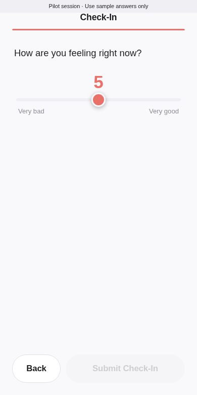
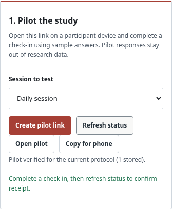

Run your first study
Make a one-question mood check-in, open it on a phone, and confirm your first pilot response arrived.
You can use the Builder on a computer or phone. Use a phone for the pilot. You can build and preview without accounts. To put the study online, you’ll need a Cloudflare account with R2 storage activated and a GitHub or GitLab account.
Build and preview
-
Start with a daily check-in
Open Builder and choose Start with a daily check-in. If you already have a draft, click New study to see this screen.

-
Try the question yourself
Click Preview at the top of Builder, then Begin Session. You should see “How are you feeling right now?” Answer the question and finish the preview. Preview responses stay in the preview.
Just exploring? You can stop here and come back to the draft on this browser.

Put it online
-
Download your study file
Give your study a name in Overview. Add consent text in Onboarding. Then choose Review & Deploy → Download prepared study. Keep the file ending in
-cloudflare-study.html. It contains your questions, consent text, and study settings. You’ll install this file on your online host in Step 5.Practice consent text for a staff-only test
Practice run only. I understand that this exercise is for the study team to test the phone workflow with sample answers. I will use made-up data and will not enter my name, contact details, or health information. No research participants are enrolled in this test.
Replace this text with your study’s approved consent before enrolling anyone.

-
Create your Cloudflare host
- Cloudflare
- Hosts your study online.
- Worker
- The part of Cloudflare that opens your study for participants, runs Study Admin, and receives responses.
- R2
- Cloudflare storage where your study file and responses are saved.
- GitHub
- Holds a copy of the code Cloudflare uses to set up your Worker.
Create a GitHub account and a Cloudflare account. In Cloudflare, open Storage & databases → R2 → Overview and complete R2 setup. R2 has a free allowance and requires billing setup.
Back in EMA Forge, click Create new study host. Follow the prompts to connect GitHub and name the Worker. Set
ADMIN_TOKENto a unique password of at least 32 characters and save it in your password manager. This is the password you’ll enter to open Study Admin. Click Deploy.Look for an address ending in
.workers.dev. Copy it.Cloudflare’s R2 setup guide · Cloudflare’s example setup screens
-
Install your study
Paste the address into Hosted study URL in EMA Forge. Click Open admin and sign in with the password you just made. Choose the downloaded file and click Install and open overview. Study Admin installs the file on your online host, which serves both the participant study and the admin interface.
On a phone, keep the Builder tab open while Cloudflare deploys. When Study Admin asks for the prepared file, look in Files or Downloads.


Look for the Overview page with Create pilot link.
Run the phone pilot
-
Answer the check-in on your phone
In Study Admin, select Daily session and choose Create pilot link. If you’re already on your phone, choose Open pilot. From a computer, use Copy for phone and open the link on your phone. Finish with a made-up response.
Pilot links are for testing only. Use participant links when you’re ready to enroll.
Look for “Data uploaded successfully.”

-
Confirm the response arrived
Back in Study Admin, click Refresh status on the pilot card. When you see Pilot verified, your phone check-in made it into storage. It stays out of research counts and exports.
